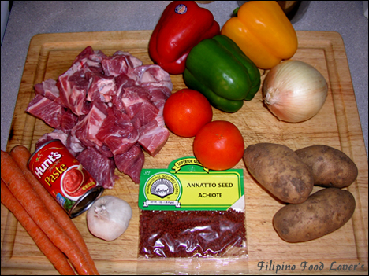
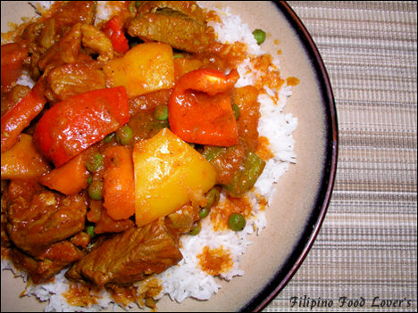
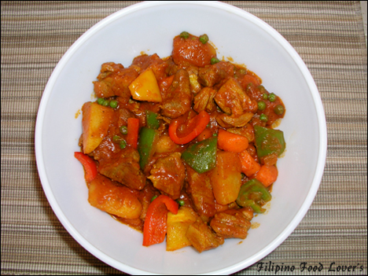
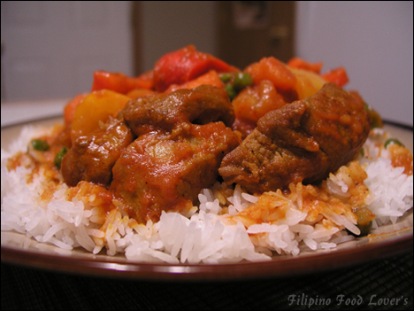

Pork Afritada
This dish was brought by the Spaniards when they occupied the Philippines. It was quickly adapted by the Filipinos and became a very
popular celebratory dish. Afritada comes in two versions, pork and chicken
This is the pork version. Pork Afritada is one of the many tomato sauce based Filipino dishes and it does remind me of a lot of different
occasions when I was in the Philippines. From family gatherings to just normal family dinners, Afritada has a reputation to satisfy a lot of
Filipinos taste buds. Now let’s get down to it.
Ingredients:
- 2 Lbs of Pork belly or pork butt cut in 2×2 in. cubes
- 4 Medium sized potatoes, quartered
- 3 Medium carrots cut in 1 in. pieces
- 1 Large onion, diced
- 4 Cloves of garlic peeled and smashed
- 2 Small tomatoes, seeded and diced
- 2 Bay leafs
- 4 Tbs. Annatto seeds or atsuwete seeds
- **4 Cups of tomato sauce
- 1 Cup of green peas (frozen is fine)
- ½ Red bell pepper 1 in. diced
- ½ Yellow bell pepper 1 in. diced
- ½ Green bell pepper 1 in. diced
- Salt & Pepper to taste
- ½ Tbs. MSG (optional)
- 3 Tbs. Corn oil
- ** Use tomato paste if tomato sauce is not available.
- (**3 Cups of water and 1 cup of tomato paste)
Directions:
- In a large casserole dish heat 1 Tbs. of oil, season pork with salt, and brown on all sides.
- In another frying pan heat 2 Tbs. of corn oil and add annatto seeds until oil turns dark red.
- Using a strainer pour annatto seed oil onto the browned pork and let it saute for about three minutes while stirring.
- Then add the following: garlic, tomatoes, onions, bay leaf, and tomato sauce. Stir and cover then let simmer over medium low heat
for 10 minutes.
- Add msg and salt & pepper to taste.
- Next add carrots, cover, and let it simmer for another 3 minutes.
- Add the potatoes and let it cook for 12 minutes or until potatoes are tender stirring frequently to avoid scorching.
- After the potatoes are tender you may add the green peas, stir, and let it cook for 2 minutes.
- Then add the final ingredients the bell peppers. Serve with white rice and enjoy your delicious Pork Afritada.



